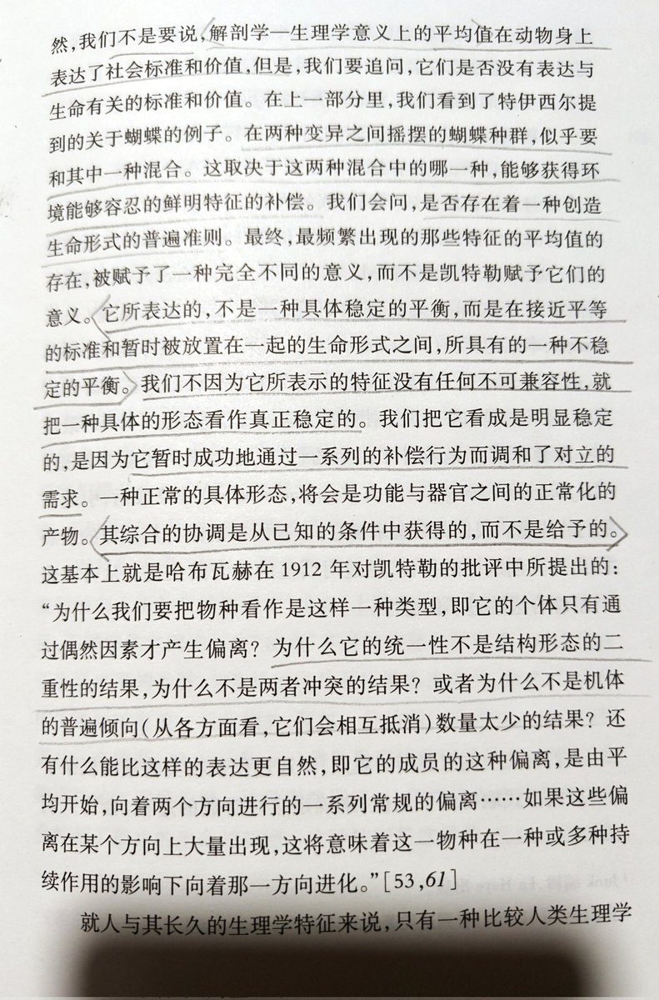

所以在那种情形下援引关于化学过程或反应的过渡态理论或许并不是完全不恰当的，生命现象是极性进程的复杂统合。
只要被观测，就会有读数，其含义取决于表征方法的内在结构与被对象化之客体发生干涉的具体方式以及时空场域。
过渡态是可以被描述的，但这从来都不意味着其归属于什么特定的进程或平衡。

只要被观测，就会有读数，其含义取决于表征方法的内在结构与被对象化之客体发生干涉的具体方式以及时空场域。
过渡态是可以被描述的，但这从来都不意味着其归属于什么特定的进程或平衡。

@ThrumboABBBAA 我想，你对我所言的“误解”很可能是来自那之前一条推文中的“稳态边界”，我不强调一个单一的现实或总体的边界，稳态，在这个语境下实际上的含义其实更接近某种“瞬态”，一种充分容纳了不稳定因素的实际上是“假”的稳态，“给定条件”标记了时间性，受限于字数限制或也是刻意含蓄，于是只寄望读者能自有体会。